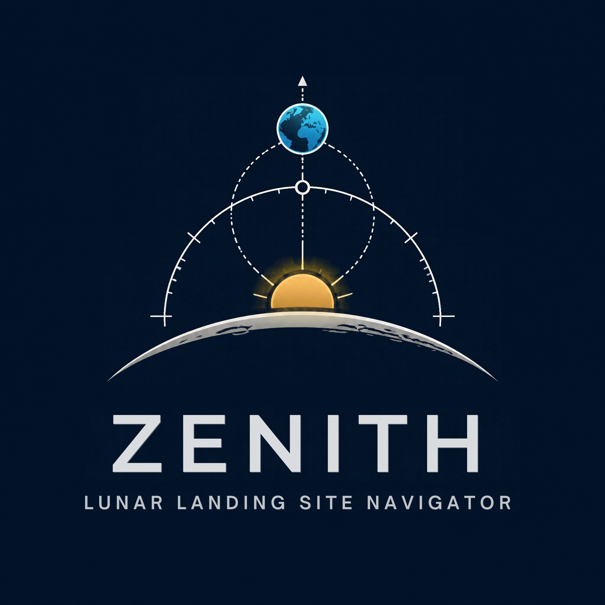

Sun & Earth
JPL Horizons supplies source timestamps, observer angles and Sun distance. The demonstration uses actual five-minute records.
A lunar instrument needs power and geometric Earth visibility. Its original start has a conflict.
ZENITH compares allowed site and time changes under the same requirements, then asks how sensitive each candidate is to declared assumptions.
NASA Space Apps · Lunar Landing Site Navigator · preliminary screening, not mission certification.

JPL Horizons supplies source timestamps, observer angles and Sun distance. The demonstration uses actual five-minute records.
LOLA local terrain and regional terrain produce a sampled skyline. Complete horizon and frame alignment remain unverified.
Duration, demand, delay and panel settings stay fixed. Compare Site01 Connecting Ridge with Site04 Shackleton Rim at common source times.
Horizons records are calculated ephemerides, not landed observations.
Site01 · 21 Dec 2026 · 00:00–06:00 UTC
Calculating…
minimum nominal power against a 100 W demand
Six hours · maximum delay 72 hours · Earth visibility required.
Fixed panel: 1.5 m² area, 25% efficiency, 60° tilt and 90° azimuth. These are illustrative user inputs.
The model checks source points in [start, finish). It does not establish continuous power.
Calculating the first candidate…
—
meets the unchanged 100 W demand
—
does not meet demand under this test
Test: 10% lower output and nine tilt/azimuth combinations at −1°, 0°, +1°. Illustrative assumptions, not measured hardware tolerances.
Calculating…
—
—
—
Calculating…
Start with empty inputs or explicitly load the example, then Compare plans. Compare the original, nominal and sensitivity-tested cases. Inspect an alternative without changing the plan; apply it explicitly while preserving the latest permitted start.
Passing samples are not continuous operation. Earth-center visibility is not an RF link. Neither result certifies landing safety.
Both sensitivity profiles retain the same operation, 10% output reduction and nine orientation combinations.
Original raw-source fingerprints and 2,882 fine records checked. A separate vector implementation checks 8,646 power calculations using the same source inputs.
Full terrain/frame accuracy, temporal continuity, battery autonomy, eclipses, thermal/electrical losses, RF contact and human usability. No successful SPICE comparison is claimed.
NASA Moon Trek already supports mission planning and illumination analysis. ZENITH's contribution is its constrained, inspectable decision workflow. AI assisted development; no AI-generated ephemerides.